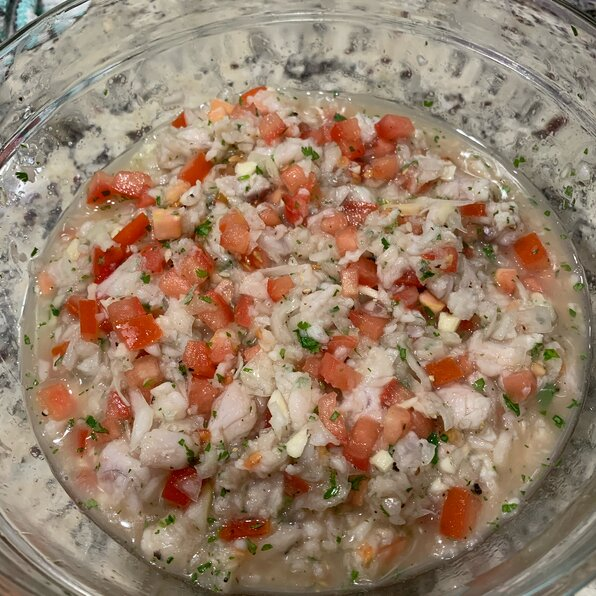

Basic Ceviche

Description
You should put the fish already dice sliced covered with the lime juice.
while chilling on the refrigerator, mix the tomatoes, green peppers, red peppers, jalapeno peppers,garlic, salt, and pepper in a bowl.
After cutting them mix them together and let them chill for about an hour.
after that its ready to eat! you can eat it with sliced fried plantains or rice
Ingredients
- 1 pound halibut, cut into bite-size pieces
- ½ cup lime juice
- 1 large tomato, seeded and diced
- 1 bunch fresh cilantro, chopped
- ⅓ cup diced green bell pepper (Optional)
- ⅓ cup chopped green onion
- 1 jalapeno pepper, chopped, or to taste
- 4 cloves garlic, minced
- salt and ground black pepper to taste
Steps
- Place fish into a flat dish; cover with lime juice. Chill fish in refrigerator until tender and opaque, at least 3 hours. Drain lime juice.
- Mix tomato, cilantro, green bell pepper, green onion, jalapeno pepper, garlic, salt, and pepper in a bowl; add fish and stir. Chill in refrigerator until flavors blend, about 1 hour.
Back to list